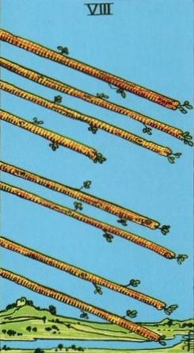
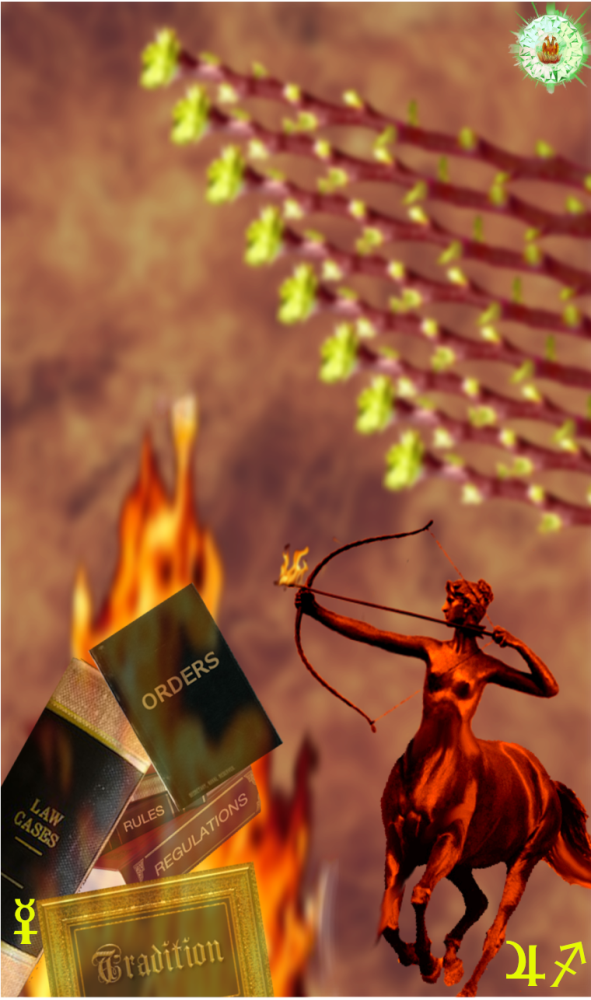
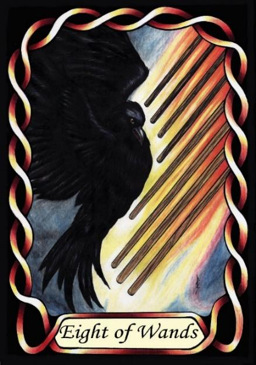

Eight of Wands



Sign |
|
Nine: change |
|
Sign Ruler |
|
Element |
Fire: change |
Modality |
|
Symbol |
Centaur |
Decan |
|
Decan Ruler |
|
Time |
Nov 23: Dec 2 |
Independence Sagittarius I
An Apprentice in the field of progressive change naturally recognises problems that need fixing, but may be too quick to insist on corrective action, without having the skills to devise a socially acceptable change. Their desire to burn down the system can make them take a revolutionary path, rather than evolutionary.
The symbolism of the Centaur is especially poignant, as a creature that is half man, half beast, with the beast representing instinct, and the man representing reason. These Sagittarians have a highly developed moral sense, which is based primarily on instinct, and have the intellect to promote workable solutions to social issues. In some ways, they are more about Justice than either Libra or Virgo, as befits their Jupiterian rulership.
Goldschneider Personology
All Sagittarians take a highly individual approach to life. Those of this first decan can only be motivated by their own objectives, and have difficulty being directed by others. Their strong idealism can lead to friction with others who do not share the same motivations, or at the same level of intensity.
RWS Imagery
A set of Wands represent arrows in flight, which in turn represents the first decan of Sagittarius the Archer. It also represents the independence and swiftness of an arrow in flight, which in turn is reminiscent of the swiftness of Mercury.
Summary:
The Wands represents the Apprentice's drive for progressive change, independence, and swift action. Sagittarius' idealism and Mercury's influence emphasize individuality, speed, and potentially reckless decision-making.